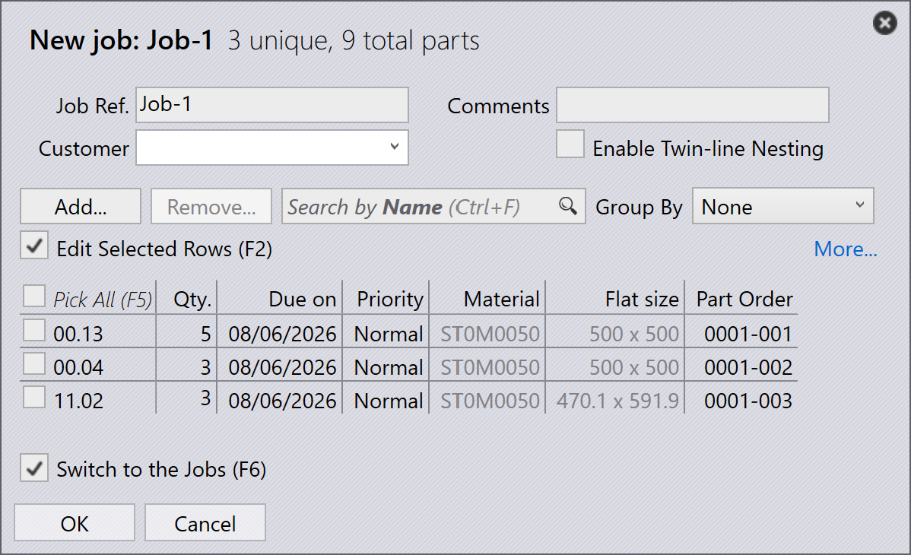

Workflow
TruSmartCAM to system realizacji produkcji (Manufacturing Execution System), który zarządza procesami produkcji wyrobów z blachy i optymalizuje je. Workflow w TruSmartCAM składa się z serii kroków, które wykonuje się, aby zrealizować określone zadanie lub proces. Workflow można dostosować do różnych procesów produkcyjnych i dopasować do konkretnych potrzeb. Workflow w TruSmartCAM zazwyczaj obejmuje następujące kroki:
1. Konfiguracja systemu
Skonfiguruj TruSmartCAM zgodnie ze swoim środowiskiem produkcyjnym. Ten podstawowy krok obejmuje definiowanie maszyn wraz z ich możliwościami i parametrami, dodawanie dostępnych materiałów i zakresów grubości, konfigurowanie bibliotek tooling ze stemplami i matrycami, tworzenie setup sheet dla różnych konfiguracji maszyn oraz zarządzanie kontami użytkowników z odpowiednimi uprawnieniami. Prawidłowo skonfigurowany system zapewnia dokładne przetwarzanie i zapobiega błędom na późniejszych etapach. Ta konfiguracja jest zazwyczaj wykonywana jednorazowo podczas wstępnego wdrożenia, z okresowymi aktualizacjami w miarę rozwoju fabryki.
Więcej informacji znajduje się w Dodawanie/usuwanie maszyny, Materiał, Arkusze, Konfiguracja tooling oraz Konfiguracja użytkowników.

2. Dodawanie części do biblioteki
Zaimportuj części CAD 2D lub 3D do biblioteki części przy użyciu obsługiwanych formatów, takich jak pliki DXF, DWG lub STEP. Podczas importu TruSmartCAM automatycznie analizuje geometrię części, weryfikuje wykonalność produkcyjną, przypisuje wymaganą technologię obróbki blachy (laser, wykrawanie lub kombinację) oraz generuje miniatury podglądu. Zaimportowane części pojawiają się jako kafelki w widoku biblioteki, gdzie oznaczone kolorami ikony wskazują status części, typ technologii, wymagania materiałowe oraz wszelkie wykryte problemy. Ten system wizualny pozwala na szybką ocenę gotowości części na pierwszy rzut oka.
Więcej informacji znajduje się w Biblioteka.

3. Weryfikacja części i tooling
Sprawdź każdą zaimportowaną część pod kątem potencjalnych problemów produkcyjnych. Upewnij się, że geometria części jest prawidłowa i wykonalna, przypisania tooling są poprawne i dostępne, wybór materiału i grubości odpowiada zapasom magazynowym, a sekwencje gięcia są prawidłowo zdefiniowane dla części formowanych. W przypadku wykrycia problemów otwórz część w TecZone, aby zmodyfikować geometrię, ponownie przypisać lub zoptymalizować tooling, dostosować parametry przetwarzania lub poprawić specyfikacje materiałów. Rozwiązanie problemów na tym etapie zapobiega opóźnieniom produkcji i ogranicza ilość odpadów podczas wytwarzania.
Więcej informacji znajduje się w Status części oraz Status tooling.

4. Organizowanie części w zadania job
Grupuj zweryfikowane części w zadania job na podstawie wymagań produkcyjnych. Zadanie job reprezentuje logiczną jednostkę produkcyjną, która może obejmować części z pojedynczego zlecenia klienta, części współdzielące wspólne materiały i grubość, części o zbliżonych terminach dostawy lub kombinację opartą na Twojej strategii produkcji. Zadania job stanowią kontener do planowania, umożliwiają wsadowe przetwarzanie powiązanych części, zapewniają efektywne wykorzystanie materiału dzięki nestingowi oraz upraszczają śledzenie i raportowanie. Zadania job można tworzyć ręcznie, wybierając części, lub automatycznie na podstawie wcześniej zdefiniowanych reguł i filtrów.
Więcej informacji znajduje się w Zadania job.

5. Planowanie zadań job na maszyny produkcyjne
Po utworzeniu zadania job przypisz je do odpowiedniej maszyny produkcyjnej. Weź pod uwagę możliwości maszyny, w tym obsługiwane technologie (laser, wykrawanie, głowica rewolwerowa), pojemność materiałową i grubościową, dostępny tooling oraz bieżące obciążenie. Jeśli istnieje wiele odpowiednich maszyn, wybierz na podstawie priorytetu produkcji, dostępności maszyny, wymagań konfiguracyjnych lub optymalizacji kosztów. Przypisanie może być ręczne dla elastyczności lub automatyczne na podstawie wstępnie skonfigurowanych reguł i algorytmów harmonogramowania maszyn.
Więcej informacji znajduje się w Planowanie zadania job.

6. Zwalnianie NC dla zadań job
Na tym etapie generowane są układy cięcia. Układy można nadal edytować i dodawać do nich technologie cięcia za pomocą TecZone. Następnie wyeksportuj wyjście NC i prześlij je do sterownika maszyny lub wyznaczonej lokalizacji sieciowej. Zadanie job jest wtedy blokowane, aby zapobiec dalszym modyfikacjom, a jego status jest aktualizowany na „Released” na potrzeby śledzenia produkcji.
Więcej informacji znajduje się w Wysyłanie/wycofywanie NC.

7. Zakończenie produkcji i finalizacja zadań job
Wykonaj zwolnione zadanie job na przypisanej maszynie. Podczas produkcji operator maszyny postępuje zgodnie z programem NC, weryfikuje jakość części podczas cięcia, zarządza załadunkiem i rozładunkiem materiału oraz reaguje na wszelkie alarmy lub problemy maszyny. Po zakończeniu produkcji oznacz poszczególne części lub całe zadanie job jako ukończone w TruSmartCAM. Ten ostatni krok aktualizuje rekordy magazynowe, rejestruje rzeczywisty czas produkcji i zużycie materiału, archiwizuje dane zadania job na potrzeby raportowania i analizy oraz zamyka cykl workflow.
Więcej informacji znajduje się w Oznaczanie jako ukończone.